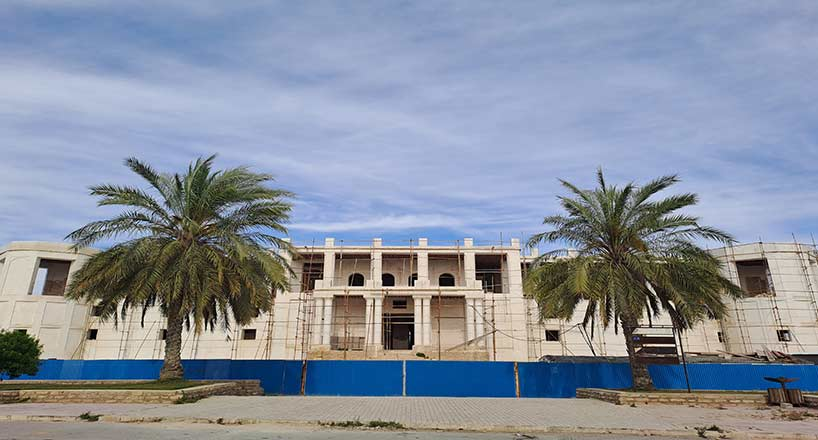

سالها پیش در دوره قاجار، تاجری پولدار به نام محمدمهدی ملک التجاره در قلب بوشهر، عمارت تاریخی ملک را بنا کرد. تاریخ دقیق ساخت عمارت ملک بوشهر به زمانی بازمیگردد که محمدمهدی ملک التجاره به فرانسه سفر کرد و از آن زمان به بعد تصمیم گرفت این بنا را با همکاری مهندسان فرانسوی بسازد. این عمارت فرازونشیبهای تاریخی زیادی را از سر گذرانده است به طوری که ابتدا انگلیسیها آن را اشغال کردند و بعد به مقر نظامی تبدیل شد. ساختمان اصلی این عمارت و نقاشیهای آن، عمارت ملک را به یکی از جاهای زیبا و دیدنی بوشهر تبدیل کرده است. سیستم خنککننده عمارت ملک، نشان از دقت و ذکاوت معماری دوران خود را دارد. دیوارهای خارجی با دو جداره و فضای خالی بین آنها، عمارت را خنک میکنند، به این ترتیب که فضای خالی بین جدارهها با گیاهان مرطوب پر شده و با دریچههای خاص، هوای خنک و طبیعی به داخل عمارت هدایت میشود. آدرس: بوشهر، خیابان ماهینی، خیابان ملک، عمارت ملک
